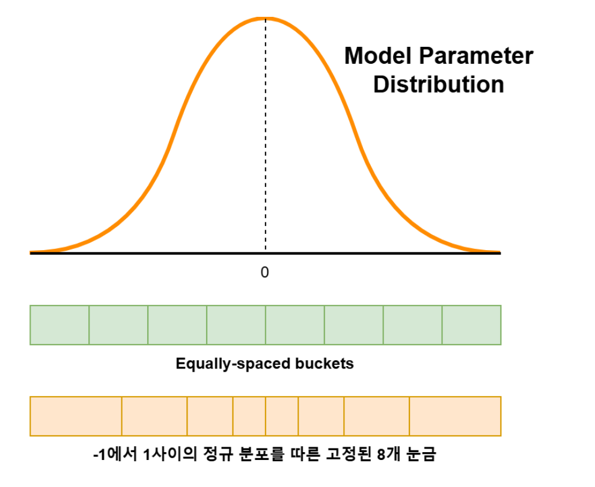

22. 캐시 양자화와 TurboQuant
양자화는 많은 실수 값을 적은 수의 대표값 코드로 바꾸는 근사 저장이다. 이 장에서는 가중치가 아니라 생성 중 누적되는 K·V를 줄인다. 벡터·내적·softmax를 아는 독자가 norm 보존, 코드 저장량, 오차가 점수로 전달되는 경로를 계산하는 것이 목표다. 기본 경로는 1~3절이며 4절은 원문 의사 코드의 조건을 점검하는 심화다.
1. 압축 대상과 회전의 역할
가중치 양자화와 KV cache 양자화는 저장 대상이 다르다. KV는 입력과 생성 과정에서 계속 생기는 활성값이므로 온라인 압축의 비용과 품질을 따져야 한다. 원문 274~280쪽은 TurboQuant를 회전·양자화·잔차 보정 흐름으로 소개한다.
벡터 x → 길이와 방향 분리 → 공유 무작위 직교 회전
→ 좌표별 저비트 코드 저장 → 필요 시 근사 내적/복원
↘ 잔차에 대한 QJL 보정 정보
직교 회전 R은 RᵀR=I여서 회전 자체는 길이와 내적을 보존한다. 큰 성분이 특정 좌표에 몰려 있던 벡터를 여러 좌표로 분산시키면 정해진 코드북을 활용하기 쉬워진다. 단위 방향의 회전된 좌표는 유한 차원에서는 구면 유래 분포를 따르며, 고차원에서 적절히 스케일한 좌표가 정규분포에 가까워진다는 직관을 쓴다. ‘모든 벡터가 정확한 정규분포로 변한다’는 뜻은 아니다.
예를 들어 원소당 3bit 코드만 세면 8구간 중 하나를 저장하고, 8차원 벡터는 24bit=3bytes다. FP16의 같은 벡터는 16bytes다. 하지만 norm, 코드북 또는 공유 설정, 정렬·packing, 잔차 보정 정보가 추가된다. 실제 압축률을 16/3으로 바로 확정할 수 없다. 0벡터는 방향 정규화를 바로 적용할 수 없으므로 별도 처리가 필요하다.
TurboQuant 원 논문은 MSE를 줄이는 양자화와 내적 오차를 다루는 구성을 구별하며, 후자에서 잔차에 대한 1bit QJL을 활용한다. QJL의 부호만 보고 일반적인 원래 벡터를 정확히 복원할 수는 없다. 필요한 scale·확률적 추정식 등 전체 정의가 있어야 한다. TurboQuant 원 논문 §2~3
원문 보충·미확인: 279쪽 코드의
QJL_decode는 정의되지 않은 설명용 의사 코드다. 이를 실행 가능한 복원 함수로 제시하지 않는다. ‘QJL은 양자화가 아님’은 저비트 부호 sketch로 내적 오차를 보정한다는 역할 설명으로 제한하며, 논문은 QJL을 1bit inner-product quantization으로 설명한다. 원문 280쪽의 ‘softmax 때문에 QJL이 품질을 떨어뜨린다’는 결과는 대상 구현·데이터·설정이 없어 보편 결론으로 확인되지 않았다. 이 자료는 해당 성능 주장을 재현했다고 표시하지 않는다.
정밀도가 낮아지면 캐시가 작아져 같은 장치에서 더 긴 문맥이나 큰 배치를 담을 가능성이 있다. 곧바로 전체 시스템 메모리 수요가 줄었다거나 모든 생성이 빨라졌다고 결론내릴 수는 없다. 역양자화·packing 비용, 커널 지원, 실제 병목과 품질을 함께 측정해야 한다.
274쪽의 그림은 임의 모집단에서 표본평균을 여러 번 구할 때 평균 분포가 종 모양이 되는 통계 도식이다. 가로축 x와 평균 x̄, 세로축 p, 표준편차 σ와 σ/√n을 보여준다. 이것은 회전된 개별 좌표의 분포를 직접 증명하는 그림이 아니다. 옆의 0.9999428 같은 큰 성분도 attention 확률인지 KV 원소인지 정의가 없어 ‘KV의 실제 확률분포’라고 해석하지 않는다.
2. 길이·방향과 회전의 작은 예
275쪽은 (x,y) 직교좌표와 (r,θ) 극좌표로 같은 화살표를 나타낸다. x=(3,4)이면 r=5, 단위 방향 z=(0.6,0.8)이다. r를 따로 저장하면 z의 각 좌표를 제한된 범위에서 양자화할 수 있다. 고차원에서 단일 θ 하나로 모든 방향을 나타내지는 못한다.
276쪽 식 x′i=Σj Rij xj는 회전 후 한 좌표가 원래 여러 좌표의 선형 결합임을 뜻한다. R=[[0,-1],[1,0]]이면 x′=(-4,3), 길이는 5다. q=(1,2)를 같이 회전하면 (-2,1)이므로 원래 내적 11과 회전 내적 11이 같다. key만 회전하고 query를 그대로 내적하면 2가 되어 틀린다. 역회전해 복원하거나 query도 같은 좌표계로 변환해야 한다. 이 90도 예는 내적 보존을 설명하며 2차원에서 정규분포를 만든다는 예가 아니다.
277쪽 막대의 이상치 분산은 큰 좌표 하나가 모든 양자화 범위를 지배하지 않도록 한다는 직관이다. 원문 BEFORE에는 87.4와 -42.1, AFTER에는 -38.3,41.0,50.2,22.1,-27.6,-23.6,-33.8,28.9가 표시된다. 표시된 값의 제곱합은 전후 각각 약 9411.18과 9452.71로 정확히 같지 않다. 반올림 또는 예시 구성 오차가 있으므로 실제 직교행렬 적용의 수치 검증 데이터로 쓰지 않는다.
3. 코드북과 저장량
0 근처 구간 폭과 양 끝 구간 폭을 비교한다.

가로축은 좌표 값, 곡선 높이는 분포 밀도의 개념적 표시다. 위쪽 Equally-spaced buckets는 같은 폭, 아래쪽은 밀도가 높은 중앙을 더 촘촘히 나눈다. 8개 대표값의 인덱스는 3bit다. Model Parameter Distribution이라는 원문 라벨은 이 장의 KV 활성값과 대상이 다르므로 가중치 전용 기법이라고 오해하지 않는다. 정확한 경계·대표값은 그림에 없어 그림만으로 실제 코드북을 재현할 수 없다.
코드북은 각 코드가 가리키는 대표 실수 값의 표다. 교육용 4개 대표값 [-0.75,-0.25,0.25,0.75]에 z=(0.6,0.8)을 최근접 대응시키면 (0.75,0.75)이고 r=5를 곱해 (3.75,3.75)로 복원한다. 원래 (3,4)와의 제곱오차 합은 0.75²+(-0.25)²=0.625, 좌표 평균 MSE는 0.3125다. 이 코드북은 TurboQuant 최적 코드북이 아닌 손계산 예다. 양자화 후 norm이 정확히 5로 남는다고 보장하지 않는다.
활동: 128차원 FP16 벡터 하나는 256bytes다. 3bit 코드만 저장하면 48bytes이고 norm을 FP16 2bytes로 저장한다고 가정하면 50bytes, 약 5.12배다. 여기에 128개 1bit 보정 코드를 별도로 추가하면 16bytes가 더해져 66bytes, 약 3.88배가 된다. 이 마지막 경우는 ‘3bit 본체+1bit 보정’ 예이며 총예산 3bit 알고리즘과 다르다. 정렬·공유 코드북·추가 scale 비용은 제외했다.
4. 잔차 보정과 의사 코드의 빠진 조건
원문 279쪽은 Stage 1 PolarQuant와 Stage 2 QJL 두 상자를 그린다. 먼저 대표값으로 근사하고 residual=원래 회전 좌표-근사 좌표를 계산한다. 잔차는 아직 표현하지 못한 정보다. QJL은 그 잔차의 부호 sketch를 이용해 내적 오차를 줄이려는 단계다. sketch는 많은 실수를 적은 부호 정보로 요약한 것이다.
정정·보충: 원문 코드의 R@x 앞에는 비영 벡터에 대한 z=x/||x|| 정규화가 필요하며, 복원에는 저장 norm과 역회전이 필요하다. 원 논문의 MSE형과 내적형을 구분해야 하고 내적형 총 b-bit 예산은 MSE 부분 b-1 bit와 QJL 1bit로 나눈다. 논문의 QJL 투영 행렬은 독립 표준정규 원소인데 원문은 random_sign_matrix로 적었으므로 같은 이론 보장을 바로 적용할 수 없다. QJL_decode는 정의가 없고 residual 길이·정규화 계수가 빠져 실행 가능한 구현이 아니다. 부호는 크기를 지우므로 sign(r)=sign(10r)만 보고 두 잔차를 구별할 수 없다. 원 논문 §2.2~3
‘PolarQuant’라는 이름은 슬라이드 단계명으로 기록한다. 이 자료가 확인한 논문의 MSE 최적 TurboQuant와 내적 최적 TurboQuant를 동일한 단계명으로 무조건 치환하지 않는다. 원문 동영상 참고는 내용을 확인·복원하지 않았다.
5. 오차와 성능을 확인하는 방법
280쪽은 캐시가 작아지면 더 긴 context를 담거나 대역폭 부담을 줄일 수 있다고 정리한다. 한편 softmax 뒤 품질 저하 주장은 구현 저장소 이름만 제시되어 실험 조건이 불명확하다.
교육용으로 logits=(0,0)의 softmax는 (0.5,0.5)다. 첫 값에 0.1 오차를 넣으면 (0.52498,0.47502)로 바뀐다. 확률이 바뀌는 것은 확인되지만 이것만으로 모든 QJL이 나쁘다는 결론은 못 낸다. 같은 상수 0.1을 두 logit 모두에 더하면 확률은 그대로다. 무편향 내적 추정이어도 비선형 softmax의 기대값까지 원본과 같지는 않을 수 있다.
실제 검증은 동일 모델·문맥·배치에서 FP16과 비교해 KV bytes, 전체 peak memory, prefill/decode 지연, 검색 정확도와 생성 품질을 따로 기록해야 한다. 본 자료는 이 성능 실험을 실행하지 않았으며 교육용 계산만 검산했다.
6. 확인 질문과 해설
- 회전만으로 파일이 작아지는가? 해설: 아니다. 실수 원소 수가 같고 저비트 코드화가 저장량을 줄인다.
- 2차원 90도 회전은 모든 값을 가우시안으로 만드는가? 해설: 아니다. 길이·내적 보존과 고차원 무작위 좌표 분포는 별개다.
- 3bit+1bit 보정을 총 3bit라고 셀 수 있는가? 해설: 아니다. 총 4bit 코드에 norm 등도 추가된다.
- 잔차의 부호만으로 정확한 복원이 가능한가? 해설: 아니다. r와 10r의 부호가 같으므로 크기 정보가 필요하다.
페이지별 원문 대조
- 274쪽: TurboQuant의 압축 목표 — KV 양자화와 분포 그림
- 275쪽: 벡터의 두 표현 — 직교좌표와 극좌표
- 276쪽: 무작위 회전 — 좌표는 섞되 길이는 보존
- 277쪽: 이상치 분산 그림 — 좌표별 크기 편중 완화
- 278쪽: 여덟 양자화 구간 — 동일 폭과 분포 기반 구간
- 279쪽: 두 단계와 QJL 의사 코드 — 대표값 오차를 부호 sketch로 요약
- 280쪽: 압축 효과와 주의점 — 긴 문맥·대역폭·품질 구분